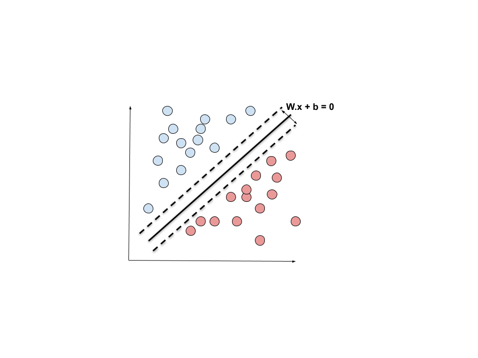

Written by
on
on
Support Vector Machine
Introduction to SVM
Support Vector Machines are the most commonly used supervised learning algorithms for classification problems. This post discusses the mathematics/intuition behind Linear SVM algorithms with a light introduction to Lagrange multipliers which is used for the optimization part. 
Problem statement:
In a 2-D space there are 2 sets of points represented by their coordinates (x1, x2) and their labels represented by y with values 1 or -1.